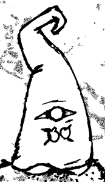

The elves are unpacking

written by the elves, all of them at onceWe have arrived, and the place is very big. Everything here is made at 1:12, which means a chair is exactly the right size for climbing and a teacup makes a decent bath.
Gisi says we are going to visit makers and write down what we think of their work. We think this is an excellent idea. We have already started a list of things to sit on.
Filed under: hello · 0 crumbs left behind